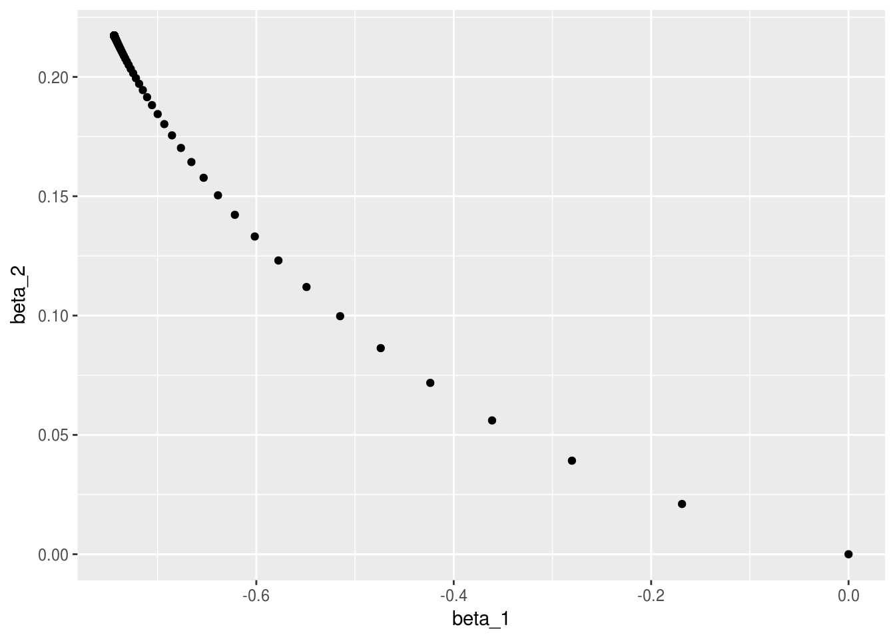
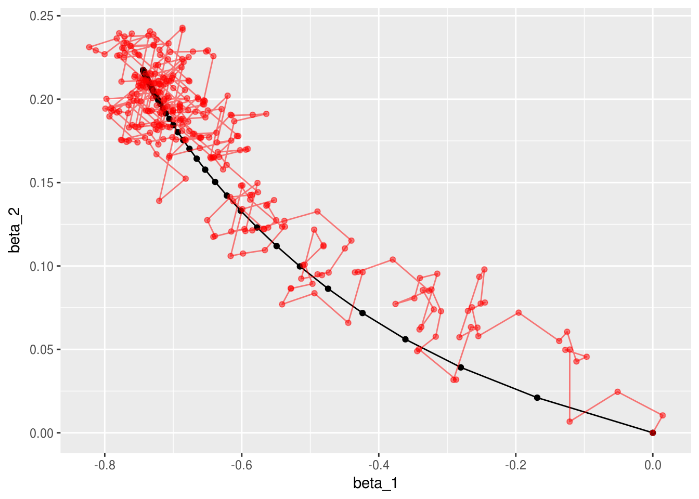
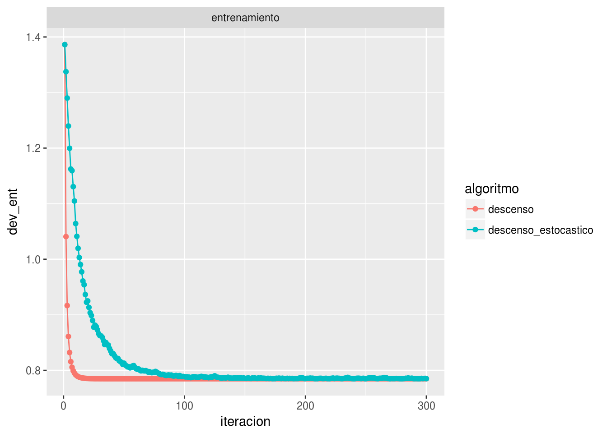
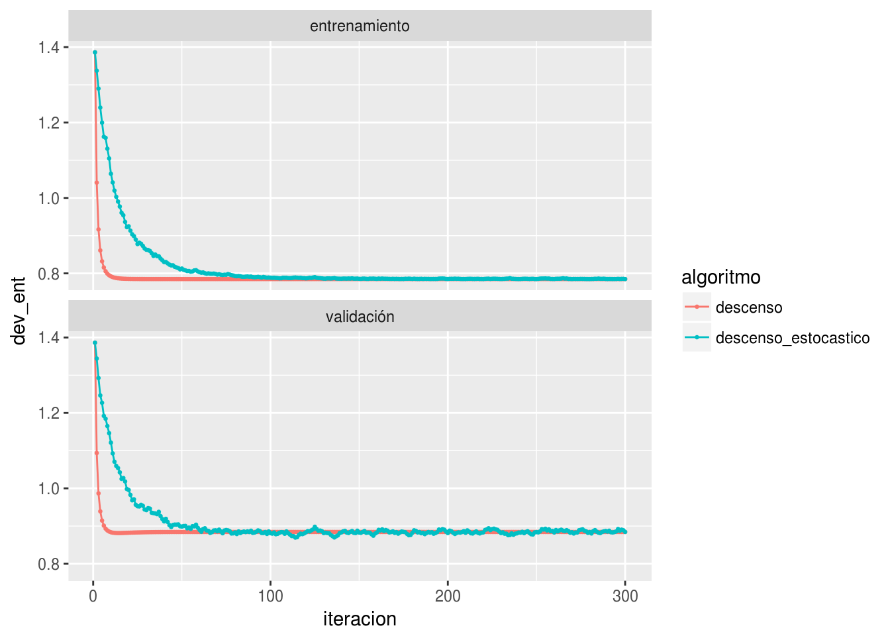
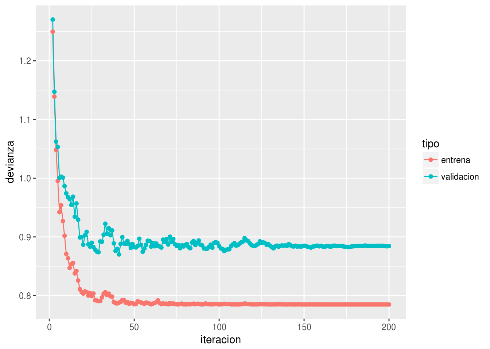
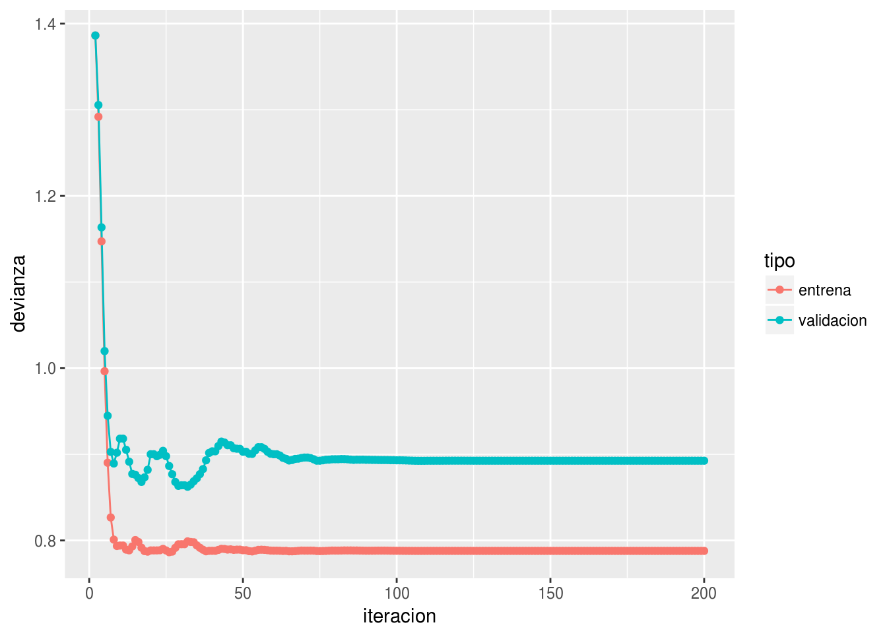

Chapter 5 Descenso estocástico
El algoritmo más popular para ajustar redes grandes es descenso estocástico, que es una modificación de nuestro algoritmo de descenso en gradiente. Antes de presentar las razones para usarlo, veremos cómo funciona para problemas con regresión lineal o logística.
En descenso estocástico, el cálculo del gradiente se hace sobre una submuestra relativamente chica de la muestra de entrenamiento. En este contexto, a esta submuestra se le llama un minilote. En cada iteración, nos movemos en la dirección de descenso de ese minilote.
La muestra de entrenamiento se divide entonces (al azar) en minilotes, y recorremos todos los minilotes haciendo una actualización de nuestros parámetros en cada minilote. Un recorrido sobre todos los minilotes se llama una época (las iteraciones se entienden sobre los minilotes).Antes de escribir el algoritmo mostramos una implementación para regresión logística. Usamos las mismas funciones para calcular devianza y gradiente.
library(dplyr)
library(tidyr)
library(ggplot2)
h <- function(x){1/(1+exp(-x))}
# la devianza es la misma
devianza_calc <- function(x, y){
dev_fun <- function(beta){
p_beta <- h(as.matrix(cbind(1, x)) %*% beta)
-2*mean(y*log(p_beta) + (1-y)*log(1-p_beta))
}
dev_fun
}
# el cálculo del gradiente es el mismo, pero x_ent y y_ent serán diferentes
grad_calc <- function(x_ent, y_ent){
salida_grad <- function(beta){
p_beta <- h(as.matrix(cbind(1, x_ent)) %*% beta)
e <- y_ent - p_beta
grad_out <- -2*as.numeric(t(cbind(1,x_ent)) %*% e)/nrow(x_ent)
names(grad_out) <- c('Intercept', colnames(x_ent))
grad_out
}
salida_grad
}Y comparamos los dos algoritmos:
descenso <- function(n, z_0, eta, h_deriv){
z <- matrix(0,n, length(z_0))
z[1, ] <- z_0
for(i in 1:(n-1)){
z[i+1, ] <- z[i, ] - eta * h_deriv(z[i, ])
}
z
}
# esta implementación es solo para este ejemplo:
descenso_estocástico <- function(n_epocas, z_0, eta, minilotes){
#minilotes es una lista
m <- length(minilotes)
z <- matrix(0, m*n_epocas, length(z_0))
z[1, ] <- z_0
for(i in 1:(m*n_epocas-1)){
k <- i %% m + 1
if(i %% m == 0){
#comenzar nueva época y reordenar minilotes al azar
minilotes <- minilotes[sample(1:m, m)]
}
h_deriv <- grad_calc(minilotes[[k]]$x, minilotes[[k]]$y)
z[i+1, ] <- z[i, ] - eta * h_deriv(z[i, ])
}
z
}Usaremos el ejemplo simulado de regresión para hacer algunos experimentos:
p_1 <- function(x){
ifelse(x < 30, 0.9, 0.9 - 0.007 * (x - 15))
}
set.seed(143)
sim_datos <- function(n){
x <- pmin(rexp(n, 1/30), 100)
probs <- p_1(x)
g <- rbinom(length(x), 1, probs)
# con dos variables de ruido:
dat <- data_frame(x_1 = (x - mean(x))/sd(x),
x_2 = rnorm(length(x),0,1),
x_3 = rnorm(length(x),0,1),
p_1 = probs, g )
dat %>% select(x_1, x_2, x_3, g)
}
dat_ent <- sim_datos(100)
dat_valid <- sim_datos(1000)
glm(g ~ x_1 + x_2+ x_3 , data = dat_ent, family = 'binomial') %>% coef## (Intercept) x_1 x_2 x_3
## 1.8082362 -0.7439627 0.2172971 0.3711973Hacemos descenso en gradiente:
iteraciones_descenso <- descenso(300, rep(0,4), 0.8,
h_deriv = grad_calc(x_ent = as.matrix(dat_ent[,c('x_1','x_2','x_3'), drop =FALSE]),
y_ent=dat_ent$g)) %>%
data.frame %>% rename(beta_1 = X2, beta_2 = X3)
ggplot(iteraciones_descenso, aes(x=beta_1, y=beta_2)) + geom_point()
Y ahora hacemos descenso estocástico. Vamos a hacer minilotes de tamaño 5:
dat_ent$minilote <- rep(1:10, each=5)
split_ml <- split(dat_ent %>% sample_n(nrow(dat_ent)), dat_ent$minilote)
minilotes <- lapply(split_ml, function(dat_ml){
list(x = as.matrix(dat_ml[, c('x_1','x_2','x_3'), drop=FALSE]),
y = dat_ml$g)
})
length(minilotes)## [1] 10Ahora iteramos. Nótese cómo descenso en gradiente tiene un patrón aleatorio de avance hacia el mínimo, y una vez que llega a una región oscila alrededor de este mínimo.
iter_estocastico <- descenso_estocástico(30, rep(0, 4), 0.1, minilotes) %>%
data.frame %>% rename(beta_0 = X1, beta_1 = X2, beta_2 = X3)
ggplot(iteraciones_descenso, aes(x=beta_1, y=beta_2)) + geom_path() +
geom_point() +
geom_path(data = iter_estocastico, colour ='red', alpha=0.5) +
geom_point(data = iter_estocastico, colour ='red', alpha=0.5)
Podemos ver cómo se ve la devianza de entrenamiento:
dev_ent <- devianza_calc(x = as.matrix(dat_ent[,c('x_1','x_2','x_3'), drop =FALSE]),
y=dat_ent$g)
dev_valid <- devianza_calc(x = as.matrix(dat_valid[,c('x_1','x_2','x_3'), drop =FALSE]),
y=dat_valid$g)
dat_dev <- data_frame(iteracion = 1:nrow(iteraciones_descenso)) %>%
mutate(descenso = apply(iteraciones_descenso, 1, dev_ent),
descenso_estocastico = apply(iter_estocastico, 1, dev_ent)) %>%
gather(algoritmo, dev_ent, -iteracion) %>% mutate(tipo ='entrenamiento')
dat_dev_valid <- data_frame(iteracion = 1:nrow(iteraciones_descenso)) %>%
mutate(descenso = apply(iteraciones_descenso, 1, dev_valid),
descenso_estocastico = apply(iter_estocastico, 1, dev_valid)) %>%
gather(algoritmo, dev_ent, -iteracion) %>% mutate(tipo ='validación')
dat_dev <- bind_rows(dat_dev, dat_dev_valid)
ggplot(filter(dat_dev, tipo=='entrenamiento'),
aes(x=iteracion, y=dev_ent, colour=algoritmo)) + geom_line() +
geom_point() + facet_wrap(~tipo)
y vemos que descenso estocástico también converge a una buena solución.
5.1 Algoritmo de descenso estocástico
Descenso estocástico. Separamos al azar los datos de entrenamiento en \(n\) minilotes de tamaño \(m\).
- Para épocas \(e =1,2,\ldots, n_e\)
- Calcular el gradiente sobre el minilote y hacer actualización, sucesivamente para cada uno de los minilotes \(k=1,2,\ldots, n/m\): \[\beta_{i+1} = \beta_{i} - \eta\sum_{j=1}^m \nabla D^{(k)}_j (\beta_i)\] donde \(D^{(k)}_j (\beta_i)\) es la devianza para el \(j\)-ésimo caso del minilote \(k\).
- Repetir para la siguiente época (opcional: reordenar antes al azar los minibatches, para evitar ciclos).
5.2 ¿Por qué usar descenso estocástico por minilotes?
Las propiedades importantes de descenso estocástico son:
Muchas veces no es necesario usar todos los datos para encontrar una buena dirección de descenso. Podemos ver la dirección de descenso en gradiente como un valor esperado sobre la muestra de entrenamiento (pues la pérdida es un promedio sobre el conjunto de entrenamiento). Una submuestra (minilote) puede ser suficiente para estimar ese valor esperado, con costo menor de cómputo. Adicionalmente, quizá no es tan buena idea intentar estimar el gradiente con la mejor precisión pues es solamente una dirección de descenso local (así que quizá no da la mejor decisión de a dónde moverse en cada punto). Es mejor hacer iteraciones más rápidas con direcciones estimadas.
Desde este punto de vista, calcular el gradiente completo para descenso en gradiente es computacionalmente ineficiente. Si el conjunto de entrenamiento es masivo, descenso en gradiente no es factible.
¿Cuál es el mejor tamaño de minilote? Por un lado, minilotes más grandes nos dan mejores eficiencias en paralelización (multiplicación de matrices), especialmente en GPUs. Por otro lado, con minilotes más grandes puede ser que hagamos trabajo de más, por las razones expuestas en los incisos anteriores, y tengamos menos iteraciones en el mismo tiempo. El mejor punto está entre minilotes demasiado chicos (no aprovechamos paralelismo) o demasiado grande (hacemos demasiado trabajo por iteración).Tamaño t
4.La propiedad más importante de descenso estocástico en minilotes es entonces que su convergencia no depende del tamaño del conjunto de entrenamiento, es decir, el tiempo de iteración para descenso estocástico no crece con el número de casos totales. Podemos tener obtener buenos ajustes incluso con tamaños muy grandes de conjuntos de entrenamiento (por ejemplo, antes de procesar todos los datos de entrenamiento). Descenso estocástico escala bien en este sentido: el factor limitante es el tamaño de minilote y el número de iteraciones.
- Es importante permutar al azar los datos antes de hacer los minibatches, pues órdenes naturales en los datos pueden afectar la convergencia. Se ha observado también que permutar los minibatches en cada iteración típicamente acelera la convergencia (si se pueden tener los datos en memoria).
Ejemplo
En el ejemplo anterior nota que las direcciones de descenso de descenso estocástico son muy razonables (punto 1). Nota también que obtenemos una buena aproximación a la solución con menos cómputo (punto 2 - mismo número de iteraciones, pero cada iteración con un minilote).
ggplot(filter(dat_dev, iteracion >= 1),
aes(x=iteracion, y=dev_ent, colour=algoritmo)) + geom_line() +
geom_point(size=0.5)+
facet_wrap(~tipo, ncol=1)
5.3 Escogiendo la tasa de aprendizaje
Para escoger la tasa, monitoreamos las curvas de error de entrenamiento y de validación. Si la tasa es muy grande, habrá oscilaciones grandes y muchas veces incrementos grandes en la función objectivo (error de entrenamiento). Algunas oscilaciones suaves no tienen problema -es la naturaleza estocástica del algoritmo. Si la tasa es muy baja, el aprendizaje es lento y podemos quedarnos en un valor demasiado alto.
Conviene monitorear las primeras iteraciones y escoger una tasa más alta que la mejor que tengamos acutalmente, pero no tan alta que cause inestabilidad. Una gráfica como la siguiente es útil. En este ejemplo, incluso podríamos detenernos antes para evitar el sobreajuste de la última parte de las iteraciones:
ggplot(filter(dat_dev, algoritmo=='descenso_estocastico'),
aes(x=iteracion, y=dev_ent, colour=tipo)) + geom_line() + geom_point()
Por ejemplo: tasa demasiado alta:
iter_estocastico <- descenso_estocástico(20, rep(0,4), 0.95, minilotes) %>%
data.frame %>% rename(beta_0 = X1, beta_1 = X2)
dev_ent <- devianza_calc(x = as.matrix(dat_ent[,c('x_1','x_2','x_3'), drop =FALSE]),
y=dat_ent$g)
dev_valid <- devianza_calc(x = as.matrix(dat_valid[,c('x_1','x_2','x_3'), drop =FALSE]),
y=dat_valid$g)
dat_dev <- data_frame(iteracion = 1:nrow(iter_estocastico)) %>%
mutate(entrena = apply(iter_estocastico, 1, dev_ent),
validacion = apply(iter_estocastico, 1, dev_valid)) %>%
gather(tipo, devianza, entrena:validacion)
ggplot(dat_dev,
aes(x=iteracion, y=devianza, colour=tipo)) + geom_line() + geom_point()
Tasa demasiado chica ( o hacer más iteraciones):
iter_estocastico <- descenso_estocástico(20, rep(0,4), 0.01, minilotes) %>%
data.frame %>% rename(beta_0 = X1, beta_1 = X2)
dev_ent <- devianza_calc(x = as.matrix(dat_ent[,c('x_1','x_2','x_3'), drop =FALSE]),
y=dat_ent$g)
dev_valid <- devianza_calc(x = as.matrix(dat_valid[,c('x_1','x_2','x_3'), drop =FALSE]),
y=dat_valid$g)
dat_dev <- data_frame(iteracion = 1:nrow(iter_estocastico)) %>%
mutate(entrena = apply(iter_estocastico, 1, dev_ent),
validacion = apply(iter_estocastico, 1, dev_valid)) %>%
gather(tipo, devianza, entrena:validacion)
ggplot(dat_dev,
aes(x=iteracion, y=devianza, colour=tipo)) + geom_line() 
- Para redes neuronales, es importante explorar distintas tasas de aprendizaje, aún cuando no parezca haber oscilaciones grandes o convergencia muy lenta. En algunos casos, si la tasa es demasiado grande, puede ser que el algoritmo llegue a lugares con gradientes cercanos a cero (por ejemplo, por activaciones demasiado grandes) y tenga dificultad para moverse.
5.4 Mejoras al algoritmo de descenso estocástico.
5.4.1 Decaimiento de tasa de aprendizaje
Hay muchos algoritmos derivados de descenso estocástico. La primera mejora consiste en reducir gradualmente la tasa de aprendizaje para aprender rápido al principio, pero filtrar el ruido de la estimación de minilotes más adelante en las iteraciones y permitir que el algoritmo se asiente en un mínimo.
descenso_estocástico <- function(n_epocas, z_0, eta, minilotes, decaimiento = 0.0){
#minilotes es una lista
m <- length(minilotes)
z <- matrix(0, m*n_epocas, length(z_0))
z[1, ] <- z_0
for(i in 1:(m*n_epocas-1)){
k <- i %% m + 1
if(i %% m == 0){
#comenzar nueva época y reordenar minilotes al azar
minilotes <- minilotes[sample(1:m, m)]
}
h_deriv <- grad_calc(minilotes[[k]]$x, minilotes[[k]]$y)
z[i+1, ] <- z[i, ] - eta * h_deriv(z[i, ])
eta <- eta*(1/(1+decaimiento*i))
}
z
}Y ahora vemos qué pasa con decaimiento:
iter_estocastico <- descenso_estocástico(20, c(0,0, 0, 0), 0.3,
minilotes, decaimiento = 0.0002) %>%
data.frame %>% rename(beta_0 = X1, beta_1 = X2, beta_2 = X3, beta_3 = X4)
dev_ent <- devianza_calc(x = as.matrix(dat_ent[,c('x_1','x_2','x_3'), drop =FALSE]),
y=dat_ent$g)
dev_valid <- devianza_calc(x = as.matrix(dat_valid[,c('x_1','x_2','x_3'), drop =FALSE]),
y=dat_valid$g)
dat_dev <- data_frame(iteracion = 1:nrow(iter_estocastico)) %>%
mutate(entrena = apply(iter_estocastico, 1, dev_ent),
validacion = apply(iter_estocastico, 1, dev_valid)) %>%
gather(tipo, devianza, entrena:validacion)
ggplot(filter(dat_dev, iteracion>1),
aes(x=iteracion, y=devianza, colour=tipo)) + geom_line() + geom_point()
ggplot(iteraciones_descenso, aes(x=beta_1, y=beta_2)) + geom_path() +
geom_point() +
geom_path(data = iter_estocastico, colour ='red', alpha=0.5) +
geom_point(data = iter_estocastico, colour ='red', alpha=0.5)
La tasa de aprendizaje es uno de los parámetros en redes neuronales más importantes de afinar. Generalmente se empieza con una tasa de aprendizaje con un valor bajo (0.01, o. 0.1), pero es necesario experimentar.
- Un valor muy alto puede provocar oscilaciones muy fuertes en la pérdida
- Un valor alto también puede provocar que el algoritmo se detenga en lugar con función pérdida alta (sobreajusta rápidamente).
- Un valor demasiado bajo produce convergencia lenta.
5.4.2 Momento
También es posible utilizar una idea adicional que acelera la convergencia. La idea es que muchas veces la aleatoriedad del algoritmo puede producir iteraciones en direcciones que no son tan buenas (pues la estimación del gradiente es mala). Esto es parte del algoritmo. Sin embargo, si en varias iteraciones hemos observado movimientos en direcciones consistentes, quizá deberíamos movernos en esas direcciones consistentes, y reducir el peso de la dirección del minilote (que nos puede llevar en una dirección mala). El resultado es un suavizamiento de las curvas de aprendizaje.
Esto es similar al movimiento de una canica en una superficie: la dirección de su movimiento está dada en parte por la dirección de descenso (el gradiente) y en parte la velocidad actual de la canica. La canica se mueve en un promedio de estas dos direcciones
Descenso estocástico con momento Separamos al azar los datos de entrenamiento en \(n\) minilotes de tamaño \(m\).
- Para épocas \(e =1,2,\ldots, n_e\)
- Calcular el gradiente sobre el minilote y hacer actualización, sucesivamente para cada uno de los minilotes \(k=1,2,\ldots, n/m\): \[\beta_{i+1} = \beta_{i} + v,\] \[v= \alpha v - \eta\sum_{j=1}^m \nabla D^{(k)}_j\] donde \(D^{(k)}_j (\beta_i)\) es la devianza para el \(j\)-ésimo caso del minilote \(k\). A \(v\) se llama la velocidad
- Repetir para la siguiente época
descenso_estocástico <- function(n_epocas, z_0, eta, minilotes,
momento = 0.0, decaimiento = 0.0){
#minilotes es una lista
m <- length(minilotes)
z <- matrix(0, m*n_epocas, length(z_0))
z[1, ] <- z_0
v <- 0
for(i in 1:(m*n_epocas-1)){
k <- i %% m + 1
if(i %% m == 0){
#comenzar nueva época y reordenar minilotes al azar
minilotes <- minilotes[sample(1:m, m)]
v <- 0
}
h_deriv <- grad_calc(minilotes[[k]]$x, minilotes[[k]]$y)
z[i+1, ] <- z[i, ] + v
v <- momento*v - eta * h_deriv(z[i, ])
eta <- eta*(1/(1+decaimiento*i))
}
z
}Y ahora vemos que usando momento el algoritmo es más parecido a descenso en gradiente usual (pues tenemos cierta memoria de direcciones anteriores de descenso):
set.seed(231)
iter_estocastico <- descenso_estocástico(20, c(0,0, 0, 0), 0.2, minilotes, momento = 0.7, decaimiento = 0.001) %>%
data.frame %>% rename(beta_0 = X1, beta_1 = X2, beta_2=X3, beta_3=X4)
dev_ent <- devianza_calc(x = as.matrix(dat_ent[,c('x_1','x_2','x_3'), drop =FALSE]),
y=dat_ent$g)
dev_valid <- devianza_calc(x = as.matrix(dat_valid[,c('x_1','x_2','x_3'), drop =FALSE]),
y=dat_valid$g)
dat_dev <- data_frame(iteracion = 1:nrow(iter_estocastico)) %>%
mutate(entrena = apply(iter_estocastico, 1, dev_ent),
validacion = apply(iter_estocastico, 1, dev_valid)) %>%
gather(tipo, devianza, entrena:validacion)
ggplot(filter(dat_dev, iteracion > 1),
aes(x=iteracion, y=devianza, colour=tipo)) + geom_line() + geom_point()
ggplot(iteraciones_descenso, aes(x=beta_1, y=beta_2)) + geom_path() +
geom_point() +
geom_path(data = iter_estocastico, colour ='red', alpha=0.5) +
geom_point(data = iter_estocastico, colour ='red', alpha=0.5)
Nótese cómo llegamos más rápido a una buena solución (comparado con el ejemplo sin momento). Adicionalmente, error de entrenamiento y validación lucen más suaves, producto de promediar velocidades a lo largo de iteraciones.
Valores típicos para momento son 0,0.5,0.9 o 0.99.
5.4.3 Otras variaciones
Otras variaciones incluyen usar una tasa adaptativa de aprendizaje por cada parámetro (algoritmos adagrad, rmsprop, adam y adamax), o actualizaciones un poco diferentes (nesterov).
Los más comunes son descenso estocástico, descenso estocástico con momento, rmsprop y adam (Capítulo 8 del Deep Learning Book, (???)).